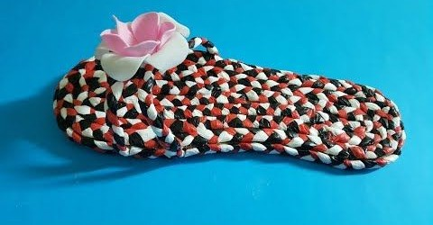

Pembuatan Sandal dari Plastik Bekas

Latar Belakang
Sampah plastik merupakan salah satu masalah lingkungan terbesar karena sulit terurai secara alami. Plastik sekali pakai, seperti kantong kresek, botol, maupun bungkus makanan, seringkali hanya dibuang begitu saja dan menumpuk di lingkungan. Hal ini dapat mencemari tanah, air, serta mengganggu ekosistem. Oleh karena itu, perlu adanya upaya pemanfaatan kembali sampah plastik agar memiliki nilai guna.
Salah satu bentuk pemanfaatannya adalah dengan mengolah plastik bekas menjadi produk kerajinan, misalnya sandal. Selain membantu mengurangi jumlah sampah plastik, pembuatan sandal dari plastik bekas juga bisa menjadi alternatif produk yang bermanfaat, kreatif, serta bernilai ekonomi.
Tujuan:
-
Mengurangi pencemaran lingkungan dengan memanfaatkan sampah plastik agar tidak menumpuk dan merusak ekosistem.
-
Memberikan nilai ekonomi karena sandal dari plastik bekas bisa dijual dan menjadi sumber penghasilan tambahan.
-
Meningkatkan kreativitas dalam mengolah limbah menjadi barang yang bermanfaat.
Alat:
- Gunting
- Cutter
- Penggarus
- Lem tembak
- Paku
- Spidol
- Pensil
Bahan:
- Plastik bekas(usahakan yang masih bersih dan kering)
- Tali bekas/plastik untuk pengikat kepangan
- Alas sandal bekas / kardus(untuk sol)
- Isi lem tembak (lem serbaguna)
Langkah kerja:
- Siapkan plastik kresek
- Pilih beberapa plastik dengan warna menarik. Cuci dan keringkan.
- Potong dan kepang plastik
- Gunting plastik jadi potongan panjang. Gulung lalu kepang menjadi tali tebal. Buat beberapa kepangan untuk sol dan tali.
- Buat sol sandal
- Potong kardus sesuai bentuk telapak kaki. Ini jadi alas dasar.
Lapisi sol dengan plastik kepang
Rekatkan kepangan plastik secara rapat di atas karton (bisa melingkar). Lem dengan kuat agar menempel dan membentuk alas yang kokoh
-
Pasang tali sandal
-
Buat lubang kecil di bagian depan dan samping sol. Masukkan kepangan plastik sebagai tali sandal, lalu ikat di bagian bawah sol dengan lem agar kuat.
-
Rapikan
-
Potong sisa plastik, perkuat bagian yang longgar, lalu biarkan kering.
-
Sandal siap dipakai
-
Sol jadi lebih kuat, tebal, dan tidak licin berkat tambahan plastik kepang
Hitungan Pembuatan:
-
Plastik (gratis, karena bekas)
-
Tali bekas(gratis, karena dapat dibuat dari plstik bekas)
-
Alas sandal bekas dan kardus (gratis)
-
Isi lem tembak(4) Rp.4.000
-
Total: Rp.4.000
Harga jual: Rp.20.000
Laba
Hitungan laba:
Laba=Rp.20.000-Rp.16.000=Rp.4.000